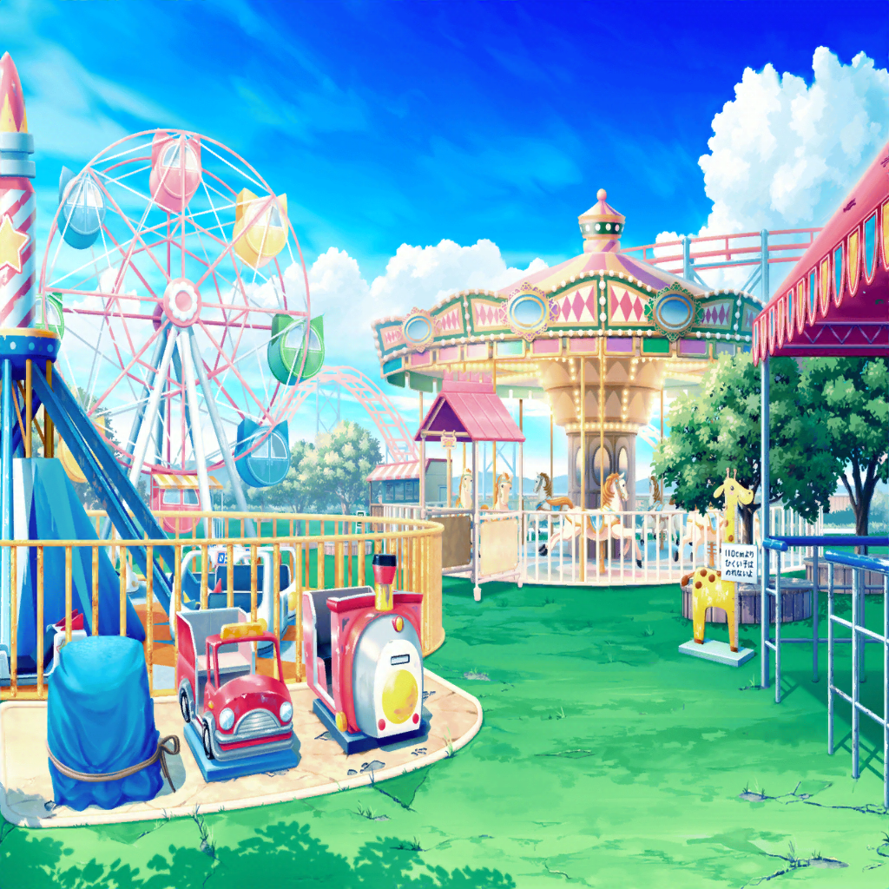

花咲川スマイル遊園地
花音
結局、お客さん全然来なかったね……
美咲
微妙な遊園地ですからね。
まあ、こうなる気はしてましたけど
こころ
みんな、こっちよ！ こっち！
次はジェットコースターに乗りましょう！
はぐみ
いいね、こころん！ はぐみ一番前に乗る！
やっぱりジェットコースターは先頭だよねっ！
こころ
じゃあ、あたしは一番後ろに乗るわ！
一番後ろもスリルがあって楽しいのよ！
こころ
ほら、早く薫も来て！
薫
い、いや、私は高いところがちょっと……
ジェットコースターは二人で行って来るといい
薫
その間、メリーゴーラウンドを堪能しているよ。
儚い目をした木馬が私を見ていたんだ
美咲
三人ともよくこの遊園地をそんなに満喫できるね。
逆にすごいっていうか……
はぐみ
だって、がっかりしてるだけじゃつまんないよ！
薫
シェイクスピアもこう言っている。
『物事に良いも悪いもない。
考え方によって良くも悪くもなる』とね
こころ
楽しい気持ちさえあれば、どんな場所だって楽しくなるわ！
美咲
一理ある……のかな？
花音
あはは……
私達もいろいろ乗ってみようよ、美咲ちゃん
？？？
楽しそうだね、お嬢さん達
こころ
？ あなた、誰かしら？
遊園地の社長
ああ、失礼。
私はここの経営者でね
花音
経営者って……
えっ？ 社長さんってことですか？
遊園地の社長
はは、そういうことになるね。
うちの遊園地で楽しそうにしてる子を見たのは
久しぶりだったから、思わず声をかけてしまったよ
薫
都会の喧騒を忘れて楽しませてもらっているよ。
ここは人が少なくてとても静かな場所だからね
はぐみ
人が少ないからアトラクションに並ばなくていいしサイコーだよ！
はぐみ、今日はジェットコースターに10回乗るんだ！
美咲
こら！ 失礼でしょうが！
こころ
ねぇ！ ショーやパレードは何時から始まるの？
どんなことをするのか、とっても楽しみにしてるのよ！
遊園地の社長
ああ、それは今はやっていないんだ。
ステージは出てくれる人がいないし、
パレードは経費削減で廃止したんだよ
はぐみ
ええっ！？ そんな〜！！
遊園地の社長
昔はここも賑わっていたけど、最新のアトラクションのある
他の遊園地にお客さんを取られてしまってね
遊園地の社長
小さな遊園地じゃ大きな遊園地に太刀打ちできないし、
もうここをたたむタイミングなのかもしれないな……
はぐみ
えっ？ スマイル遊園地をなくしちゃうってこと！？
遊園地の社長
お客さんが来ないんじゃ続けられないよ。
こんな誰も笑顔にできない遊園地じゃ仕方がないけどね
こころ
笑顔にできない遊園地……？
こころ
遊園地って笑顔になれる場所でしょう？
社長さんも笑顔じゃないのはどうして？
美咲
話ちゃんと聞きなってば……
お客さんが来ないんだから、笑顔になれるわけないでしょ？
こころ
それなら、たくさんお客さんを呼べばいいじゃない！
そうしたら、社長さんも笑顔になれるわ！
花音
それが難しいから、社長さんは困ってるんだと思うけど……
こころ
難しいかどうかなんて、やってみなくちゃわからないわ！
まずはやってみましょ！
美咲
やってみるって……？ えっ！？
こころ
あたし達でここを笑顔でいっぱいの遊園地にするのよ！
とってもいい考えでしょ！
美咲
いやいや、どうやってお客さん集めるわけ？
あたし達ただの高校生バンドだよ？
こころ
バンド……？
こころ
それよ！ すごいわ、美咲！
あたし達はバンドだもの！ 音楽でお客さんを集めるのよ！
はぐみ
さっすが、みーくん！
そうだよね！ ハロハピはバンドだもんねっ！
薫
確かに、音楽の儚さと美しさに人々はいつも心惹かれる……
ああ、素晴らしいアイディアだよ、美咲！
美咲
べ、別にアイディアを出したわけじゃ……
花音
あ、あの、みんな……？
遊園地のことなんだし、私達が勝手なことしちゃダメだよ
美咲
そ、そうそう！ 花音さんの言う通りだよ！
部外者なんだからやめなって！
こころ
ねぇ、社長さん！
あたし達、遊園地を笑顔にするお手伝いをしてもいいかしら！
遊園地の社長
別に構わないよ
美咲・花音
え……？
遊園地の社長
どうせ潰れる遊園地だし、好きにしてくれていいさ。
まあ、何をしたところでお客さんなんて来ないだろうけど……
花音
す、すごいネガティブ……
こころ
社長さんもいいって言ってるし、決まりねっ！
今日からハロハピは遊園地スマイル作戦を始めるわよ！
はぐみ・薫
おー！！
美咲
あ、頭痛くなってきた……